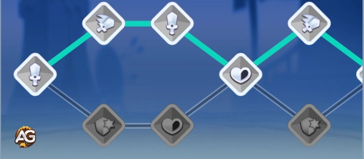

Guia de Top Troops: Como dominar a Unidade Wanda Amatista
- Por: Alexandre Domingos. .
Bem-vindo a outro guia de Top Troops aqui no Alexandre Games! Hoje, vamos nos aprofundar em uma das unidades mais intrigantes e poderosas do jogo: Wanda Amatista.
Se você está procurando dicas sobre como usá-la em batalha, seus melhores aliados ou como priorizar sua evolução, este guia tem tudo o que você precisa. Vamos começar!

Quem é Wanda Amatista?
Wanda Amatista é uma Mago lendária da facção Infernal. Sua história é tão fascinante quanto suas habilidades. Ela roubou um livro secreto dos anciãos de sua facção, desbloqueando os poderes de cristalização da ametista. Em vez de compartilhar sua descoberta, ela fundou seu próprio batalhão, A Irmandade da Ametista, especializado em cristalização. Isso a torna uma unidade única e poderosa no Top Troops, especialmente quando usada estrategicamente.
Habilidades de Wanda Amatista
Entender as habilidades de Wanda é essencial para maximizar seu potencial. Aqui está um detalhamento de suas habilidades e como usá-las efetivamente em batalha.
1. Conjuração de Ametista (Habilidade Principal)
Redução de Recarga: 10s
Conjuração de Ametista é a habilidade principal de Wanda. Ela cria uma esfera que lança 4 projéteis, mirando nos inimigos com mais vida restante. Cada projétil causa 230% do seu Dano de Ataque no nível máximo.
Prioridade de Evolução: 1ª
Por quê? Essa habilidade é a base do seu poder. Aumentar seu dano garante que Wanda possa eliminar inimigos com muita vida rapidamente.
2. Conhecimento do Erudito (Cristalizado)
Cada projétil da Conjuração de Ametista tem uma chance de 75% de Cristalizar o inimigo. Unidades Cristalizadas recebem dano igual ao ataque mais forte que receberam x2 no final do efeito, além de 2% do Dano Base de seu atacante a cada segundo.
Prioridade de Evolução: 4ª
Por quê? Embora a Cristalização seja poderosa, é mais eficaz quando combinada com aliados de alto dano. Foque em melhorar isso após aumentar seu dano.
3. Explosão de Cristal
Essa habilidade aumenta o número de projéteis da Conjuração de Ametista para 12 no nível máximo.
Prioridade de Evolução: 2ª
Por quê? Mais projéteis significam mais dano e uma chance maior de Cristalizar múltiplos inimigos. Isso torna Wanda uma força no controle de multidões.
4. Ressonância de Cristal
Ao atacar uma unidade Cristalizada, a Chance Crítica de Wanda aumenta em 65% no nível máximo.
Prioridade de Evolução: 3ª
Por quê? Essa habilidade combina bem com suas habilidades de Cristalização, mas é mais eficaz após aumentar seu dano base e o número de projéteis.
Prioridade de evolução de equipamento: foco em Estatísticas Principais de Wanda Amatista
Para aproveitar ao máximo as habilidades da Wanda, priorize a evolução dos equipamentos da seguinte forma:

1º - Equipamento: Redução de Recarga
Reduz o tempo de recarga de 10s da Conjuração de Ametista, permitindo que Wanda use sua principal habilidade de dano com mais frequência. Isso resulta em um DPS significativamente maior e mais ativações de Cristalização em uma batalha de 90 segundos.

2º - Equipamento: Ataque
Aumenta o dano bruto dos projéteis da Conjuração de Ametista e melhora o efeito de Cristalização, que depende da força do ataque anterior. Essencial para o potencial de dano explosivo da Wanda.

3º - Equipamento: Chance de Crítico
Sinergiza com a Ressonância de Cristal, que concede +65% de chance de crítico contra inimigos cristalizados. Uma taxa crítica base mais alta garante acertos críticos mais consistentes e maior dano total.

4º - Equipamento: Velocidade de Ataque
Útil se os ataques básicos da Wanda contribuírem para gerar energia ou aplicar efeitos secundários. Menos importante que os atributos baseados em habilidades, mas ainda assim um bônus interessante.

5º - Equipamento: Velocidade de Movimento
Ajuda na reposição de posição durante as lutas, especialmente em PvP ou contra chefes com efeitos em área. Não afeta diretamente o poder das habilidades.

6º - Equipamento: Roubo de Vida
Pode ajudar Wanda a recuperar vida com o dano de suas habilidades, mas só é eficaz se ela atingir vários alvos com frequência. Ferramenta de sobrevivência situacional.

7º - Equipamento: Pontos de Vida
Aumenta a sobrevivência, mas não contribui para o dano ou eficácia das habilidades. Use apenas se Wanda estiver sendo frequentemente focada.

8º - Equipamento: Defesa
Assim como os Pontos de Vida, melhora a resistência, mas tem baixa prioridade para uma maga de dano explosivo como a Wanda. Considere apenas em metas com muitos tanques.

9º - Equipamento: Chance de Bloqueio
Estatística menos importante para Wanda. Tem pouco impacto, a menos que existam sinergias ou passivas ocultas que interajam com efeitos de bloqueio.
Prioridade de Talentos
Quando se trata de talentos, foque neles nesta ordem:
- Dano: Aumenta o dano geral dela.
- Chance Crítica: Combina com Ressonância de Cristal para acertos críticos devastadores.
- Velocidade de Ataque: Ajuda a atacar mais rápido, embora seja secundário em relação ao dano e chance crítica.
- Vida: Adiciona sobrevivência, mas Wanda é melhor mantida a uma distância segura da linha de frente.

Melhores Aliados para Wanda Amatista
Wanda se destaca quando combinada com unidades que complementam suas habilidades de Cristalização. Aqui estão seus melhores aliados no Top Troops:
1. Claymore de Ametista
Claymore de Ametista é uma combinação perfeita para Wanda. Sua habilidade Cascata de Ametista causa dano massivo a unidades Cristalizadas e aplica um segundo efeito de Cristalização. Além disso, sua habilidade Estilhaçar de Cristal aumenta sua Chance Crítica ao atacar inimigos Cristalizados, tornando-a uma dupla mortal com Wanda.
2. Égide de Ametista
Égide de Ametista fornece um excelente suporte com sua habilidade Barreira de Cristal, que aplica Cristalizado em inimigos dentro de um raio. Sua habilidade Brilho Refletivo também aumenta a Chance de Bloqueio dos aliados, enquanto Proteção de Ametista reduz a Chance de Bloqueio do inimigo. Essas habilidades trabalham juntas para melhorar tanto as capacidades ofensivas quanto defensivas de Wanda Amatista.
3. Carruagem do Arco-Íris
Carruagem do Arco-Íris é outro ótimo aliado, pois sua habilidade Derramando o Chá tem uma alta chance de aplicar Cristalização em uma área. Isso combina bem com as habilidades de Wanda, permitindo que sua equipe aproveite ao máximo os inimigos Cristalizados.
Contras para Ficar Atento
Embora Wanda seja poderosa, ela não é invencível. Tome cuidado com:
- Assassinos: Unidades como o Samurai, que podem ultrapassar sua linha de frente e atacar Wanda diretamente.
- Unidades de Múltiplos Populacionais: Elas podem sobrecarregar Wanda se ela não estiver devidamente protegida.
Dicas de Batalha
Aqui estão algumas dicas práticas para dominar as batalhas com Wanda Amatista:
- Posicionamento: Mantenha Wanda no fundo da sua formação para protegê-la de ataques diretos.
- Sinergia: Combine-a com unidades de alto dano que possam aproveitar os inimigos Cristalizados.
- Timing: Use suas habilidades estrategicamente para maximizar o dano e o controle de multidão.
Considerações Finais
Wanda Amatista é uma unidade versátil e poderosa no Top Troops, especialmente quando usada corretamente. Ao focar nas prioridades de evolução, combiná-la com os aliados certos e protegê-la de contras, você pode liberar todo o potencial dela no campo de batalha. Seja para subir no ranking ou apenas se divertir, Wanda é uma unidade que vale a pena investir.
É isso neste guia de Top Troops! Se achou isso útil, não se esqueça de conferir nossos outros guias sobre melhores tropas do Top Troops e guia de ascensão do Top Troops. Até a próxima, e bons jogos!
Você pode ter interesse:
 O Guia Definitivo para o Tigre Espiritual no Top Troops
O Guia Definitivo para o Tigre Espiritual no Top TroopsDeixe Sua Opinião!
Você gostou do nosso Guia da Wanda Amatista? Há algo que não entendeu ou gostaria de sugerir mudanças? Convidamos você a se juntar à nossa sessão de comentários na página do Alexandre Games Blog. Não hesite em expressar sua opinião, clarificar suas dúvidas e compartilhar sua sugestões.
Clique no botão abaixo para começar: